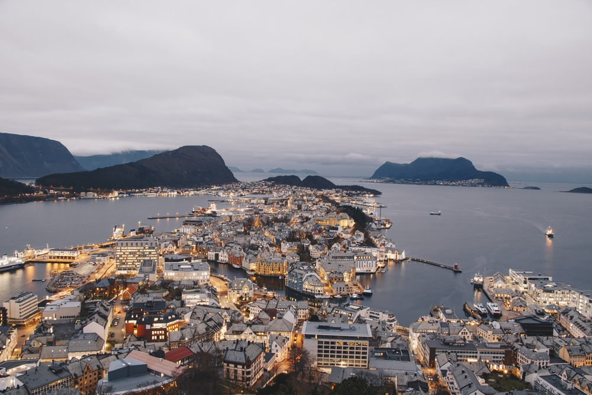

HOME PAGE
--
--

NEWZELAND
NEWZEALAND
New Zealand (Māori: Aotearoa [aɔˈtɛaɾɔa]) is a sovereign island country in the southwestern Pacific Ocean. The country has two main landmasses—the North Island (Te Ika-a-Māui), and the South Island (Te Waipounamu)—and around 600 smaller islands. It has a total land area of 268,000 square kilometres (103,500 sq mi). New Zealand is about 2,000 kilometres (1,200 mi) east of Australia across the Tasman Sea and 1,000 kilometres (600 mi) south of the Pacific island areas of New Caledonia, Fiji, and Tonga. Because of its remoteness, it was one of the last lands to be settled by humans. During its long period of isolation, New Zealand developed a distinct biodiversity of animal, fungal, and plant life. The country's varied topography and the sharp mountain peaks of the Southern Alps owe much to the tectonic uplift of land and volcanic eruptions.
Back